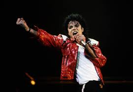

Caracteristicas del Pop
El pop a lo largo de los tiempos ha ido cambiando conform iba absorbiendo generos a su alrededor. La esencia es la idea de una musica directa, accesible, dirigida a la mayoria cantidad de publico posible, con melodiaas imborrables e invitaciones al baile a traves de ritmos contagiosos.
En el pop hay distintos tipos de pop como lo es el Pop Rock, Synth-pop, Dance-pop, etc. Aunque vayan con ritmos distintos los une algo que es lo pegadizas que son.